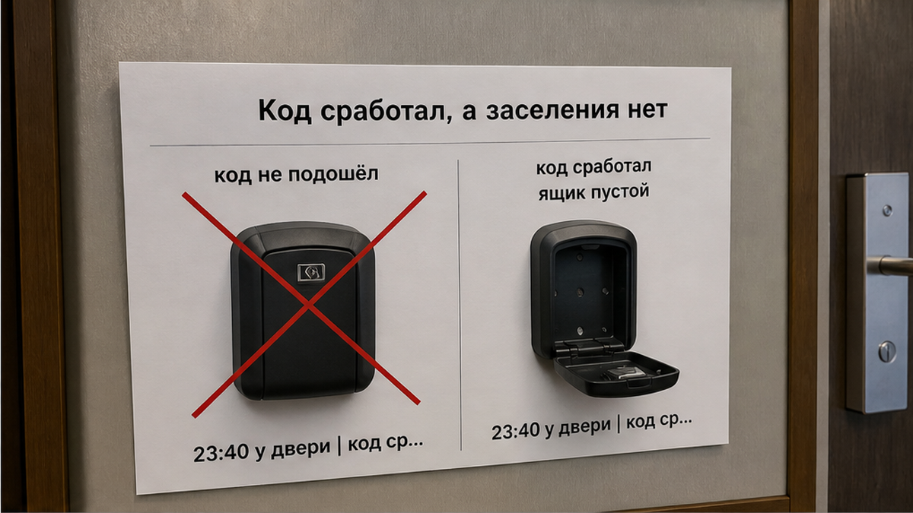
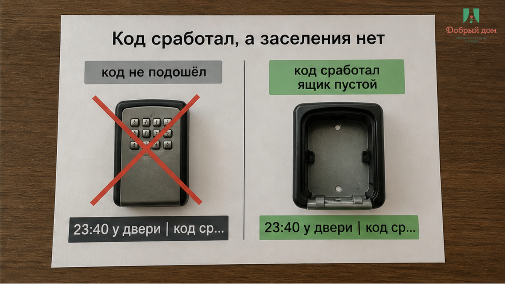
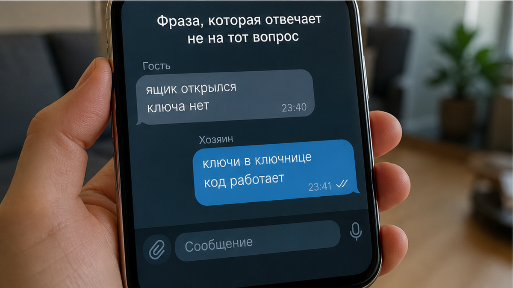
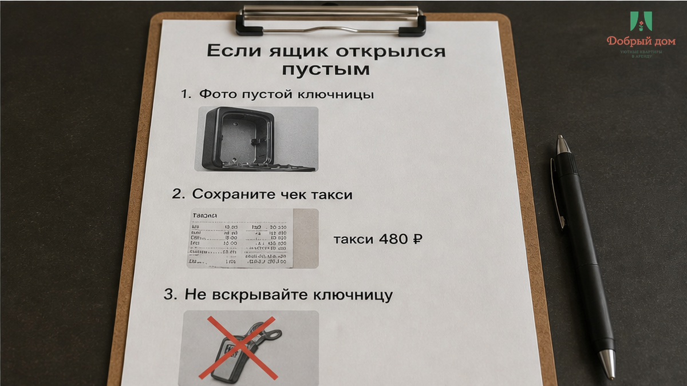
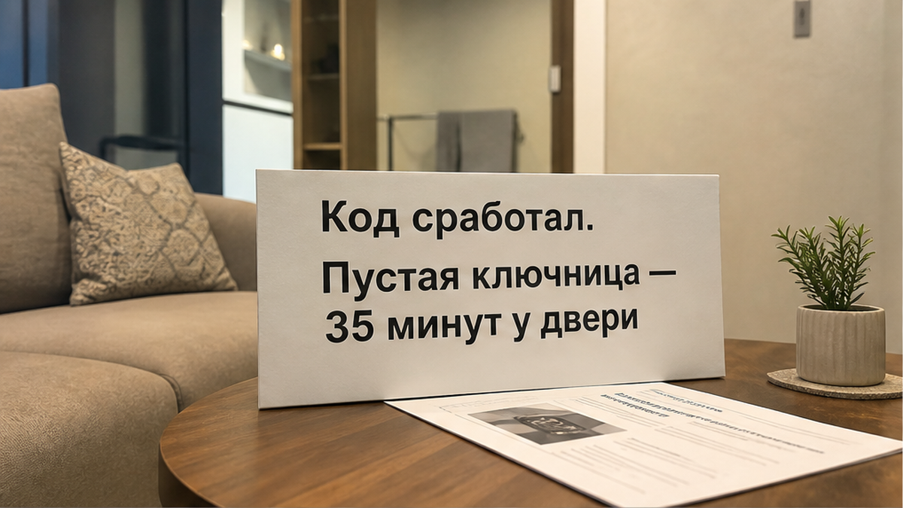
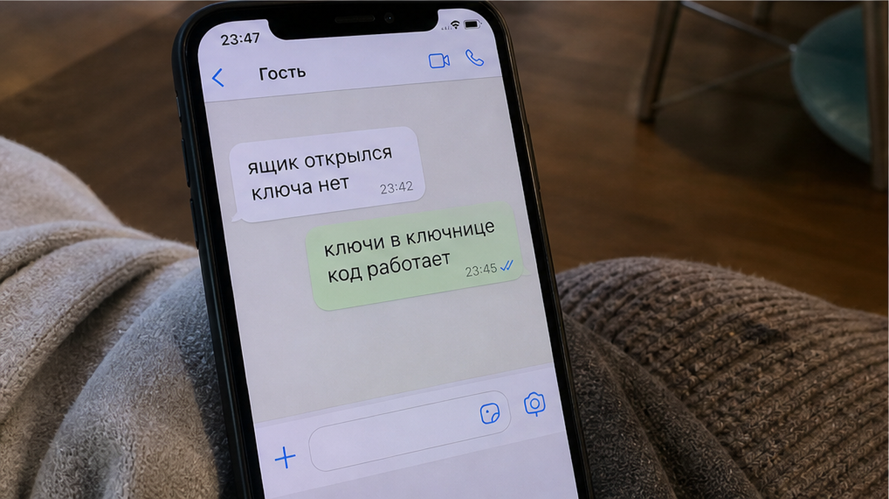
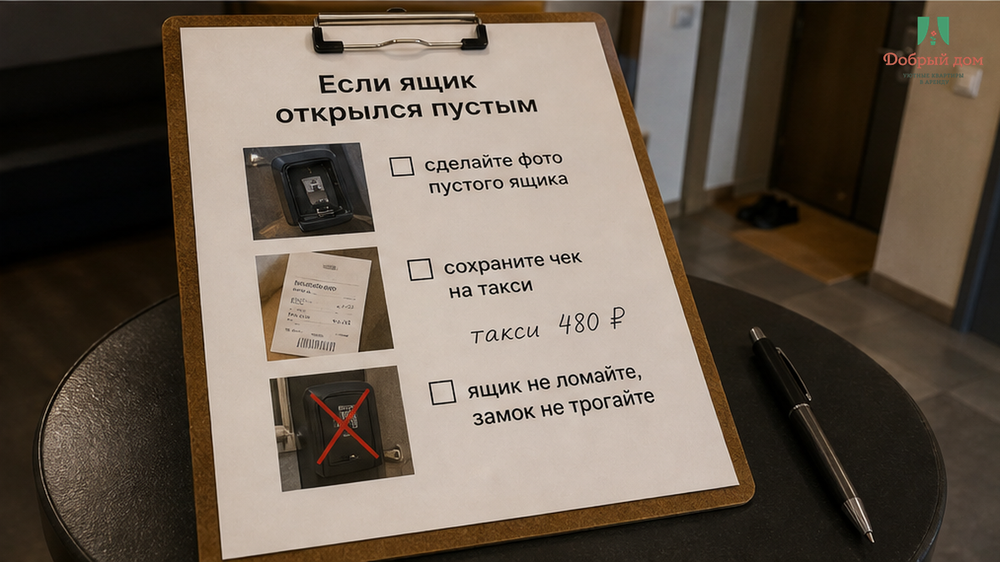

«Ключи в ключнице, код работает» — это последнее, что гость прочитал в чате, стоя у двери почти в полночь. Код действительно сработал: шторка отъехала с первого раза, дом и подъезд были правильными, ящик висел там, где нужно. Внутри было пусто. Гладкий металлический карман, в котором должен лежать ключ, — и ничего. Такси уже уехало со двора. Человек тридцать пять минут писал, звонил, снова писал и светил фонариком в открытую ключницу, будто ключ мог спрятаться в углу. Потом вызвал вторую машину и уехал ночевать в другое место. Ещё 480 ₽ за поездку, которой не должно было быть.
Случай собирательный: минуты и сумма здесь — деталь одной ночи, а не тариф города и не наш прайс. Но механика повторяется. Сломался не замок. Сломалось обещание: «код отправлен» прочиталось как «заселение готово». Это разные вещи, и разница видна только у двери, когда уже поздно.
Я хост посуточной в Тюмени. Это «Добрый дом». Пишут нам обычно в Telegram или MAX — и чаще спрашивают про код: «Когда пришлёте?», «Он точно сработает?». Про сам ключ спрашивают редко. А ломается именно эта часть цепочки.


Когда человек рассказывает о сорванном заезде, первая версия почти всегда одна: «код не подошёл». Так проще думать — цифры прислали неверные, хост перепутал, инструкция устарела. Такое действительно бывает. Мы отдельно писали о бесконтактном заселении, когда гость оказывается не у той двери и набирает не тот код.
Но здесь всё сошлось: адрес верный, подъезд верный, ящик тот, комбинация правильная, механизм исправен. Не «код не подошёл». Не «гость перепутал подъезд». Открылась ключница без ключа.
Ключница — маленький механический сейф у входа или на стене подъезда. Набрал комбинацию, отодвинул шторку, забрал ключ, после выезда положил его обратно. Вся система держится на одном условии: ключ физически лежит внутри до того, как гость доехал. Не «должен лежать» и не «мы положили его в прошлый раз», а лежит сейчас.
Причин пустого ящика несколько. Предыдущий гость мог не вернуть ключ и увезти его с собой. После уборки клинер мог закрыть дверь на своём комплекте и уехать. Ключ могли положить в соседний ящик — на стене их бывает много, а коды похожи. Или никто не подошёл и не проверил всё перед заездом. Есть и отдельная мелочь: код домофона и код ключницы могут быть разными. Вместе с ключом в ящике может не оказаться таблетки от подъездной двери. Тогда человек не попадает даже внутрь и выясняет это ночью, у входа.

Такая переписка обычно начинается одинаково. Гость пишет: «Ящик открылся, ключа нет». Хост отвечает: «Ключи в ключнице, код работает». Гость уточняет: «Ящик открыт, я смотрю внутрь, там пусто». В ответ получает: «Проверьте ещё раз». Он проверяет. Потом ещё. Проходит десять минут, двадцать, тридцать пять. После этого появляется: «Сейчас уточню и вернусь».
Это не обязательно злой умысел. Просто человек на другом конце видит в голове схему, где код равен доступу. Он отвечает про цифры, потому что про цифры у него есть данные. Про ключ никто сегодня не спрашивал и никто его не видел. Один говорит о рабочей комбинации, другой стоит перед пустым железным карманом.
Мы у себя договорились: пока ключ не увидели внутри, заезд не подтверждён. Не «код отправлен», не «инструкция ушла», не «всё как обычно». Увидели ключ — тогда пишем гостю, что можно ехать. Если ключа нет и подтвердить это некому, Нет. Так не заселяем. Переносим бронь или везём комплект руками. Это дороже для нас, зато дешевле, чем оставить человека в полночь у пустой ключницы.
Вопрос до оплаты, а не у двери: кто проверяет, что ключ лежит внутри, и когда именно? Хороший ответ звучит буднично: после уборки сотрудник проходит путь гостя целиком — подъезд, ящик, дверь. Плохой: «Код рабочий, всё будет». Это может быть правдой. Просто такая правда не отвечает про ключ.

Сначала зафиксируйте факт. Сфотографируйте открытую ключницу так, чтобы в кадр не попали набранные цифры и номер квартиры. Вам нужно показать, что ящик открыт и пуст, а не раздавать код всему подъезду. Напишите хосту текстом, не только голосовым сообщением: у переписки останется время отправки. Сохраните чеки такси, особенно если пришлось ехать второй раз.
Не ломайте ключницу. Тогда проблема хоста быстро станет вашей проблемой — разговор уйдёт в сторону порчи имущества. И не переводите деньги повторно под ночным давлением: «доплатите за другую квартиру, эту сейчас не открыть» звучит спасением у подъезда, но утром может выглядеть совсем иначе. Если бронь оформлена на площадке, обращайтесь в её поддержку, а не соглашайтесь на перевод напрямую «так быстрее».
Про случай, когда залог на выезде отказались возвращать, мы писали отдельно. А ночное молчание — тоже сигнал. Пустой ящик страшен не только отсутствием ключа, но и тем, что никто не отвечает. Историю с предоплатой и тишиной в чате после вечера разбирали здесь. Спросите заранее: кто отвечает ночью и каким будет запасной способ попасть внутрь.
И вот вопрос, который лучше задать до поездки: для вас «код пришёл» означает «можно ехать» или всё-таки «ключ уже лежит в ящике»? Если хотите проверить этот порядок у конкретного объекта, напишите нам в Telegram или MAX — отвечаю там сам.


Порядок здесь один: сначала проверка — ключ физически внутри, и кто-то это подтвердил. Потом перевод. Деньги, отправленные раньше проверки, дверь не открывают. Они только делают ожидание дороже — как те 480 ₽ за вторую машину. Про внезапные расходы у порога мы рассказывали в случае, где «всё включено» закончилось доплатой за такси.
Перед оплатой достаточно спросить:

Ключница — не замок, а обещание. Код открывает шторку, но человек ночует не в цифрах, а за дверью. Поэтому мы сначала проверяем, что внутри есть ключ, и только потом отправляем гостю подтверждение и ждём перевод. Тридцать пять минут у пустого ящика — достаточная цена, чтобы больше не путать рабочий код с готовым заселением.
Забронировать без сюрпризов у двери:
Telegram: t.me/Dobriy_dom_72
MAX: max.ru/id660300569233_biz
Бронирование: добрыйдом-72.рф/booking
Сайт: добрыйдом-72.рф
Телефон: +7 (993) 574-83-22
Менеджер: t.me/Dobriy_dom_Tyumen